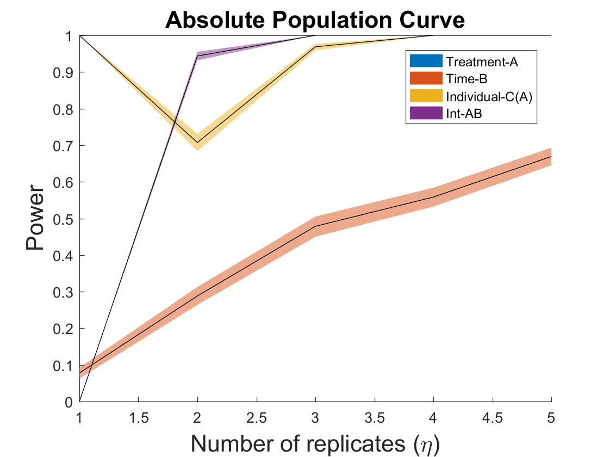

EXAMPLE of Absolute Population Curves with the Wheat data set in
"Population Power Curves in ASCA with Permutation Testing". Submitted to the Special Issue in honor of Prof. Age Smilde in his retirement.
coded by: Jose Camacho Paez (josecamacho@ugr.es) Michael Sorochan Armstorng (mdarmstr@ugr.es) last modification: 19/Jul/2024
Copyright (C) 2024 University of Granada, Granada
This program is free software: you can redistribute it and/or modify it under the terms of the GNU General Public License as published by the Free Software Foundation, either version 3 of the License, or (at your option) any later version.
This program is distributed in the hope that it will be useful, but WITHOUT ANY WARRANTY; without even the implied warranty of MERCHANTABILITY or FITNESS FOR A PARTICULAR PURPOSE. See the GNU General Public License for more details.
You should have received a copy of the GNU General Public License along with this program. If not, see http://www.gnu.org/licenses/.
Contents
Select data with all cultivars but CM
close all clear all load wheat ut = unique(trait); for i=1:length(trait) for j=1:length(ut) if strcmp(trait{i},ut(j)) ytra(i)=j; end end end ind = find(ytra~=3); ytra(find(ytra==4)) = 3; ut = unique(treatment); for i=1:length(treatment) for j=1:length(ut) if strcmp(treatment{i},ut(j)) ytre(i)=j; end end end ytre = ytre(ind)'; ut = unique(time); for i=1:length(time) for j=1:length(ut) if strcmp(time{i},ut(j)) ytim(i)=j; end end end ytim = ytim(ind)'; ut = unique(replicate); for i=1:length(replicate) for j=1:length(ut) if strcmp(replicate{i},ut(j)) yrep(i)=ytra(i)+3*(j-1); end end end yrep = yrep(ind)'; X = X(ind,:); F = [ytre ytim yrep];
ASCA model: Single replicate experimental matrix
Xc = X(find(yrep<=3),:); Fc = F(find(yrep<=3),:); [Ts, parglmo] = parglm(Xc, Fc, 'interaction', 1, [], 2, [], [], [], [1 3]); Ts.Source{2} = 'Treatment-A'; Ts.Source{3} = 'Time-B'; Ts.Source{4} = 'Individual-C(A)'; Ts.Source{5} = 'Int-AB'; disp(Ts) MSA = Ts{2,5}; MSB = Ts{3,5}; MSCA = Ts{4,5}; MSAB = Ts{5,5}; MSE = Ts{6,5};
Source SumSq PercSumSq df MeanSq F Pvalue
_________________ ______ _________ __ ______ ______ ________
'Mean' 1076 78.347 1 1076 NaN NaN
'Treatment-A' 82.898 6.0358 1 82.898 8.8359 0.001998
'Time-B' 74.641 5.4346 4 18.66 1.5795 0.22877
'Individual-C(A)' 27.801 2.0242 4 6.9501 1.7163 0.10889
'Int-AB' 47.255 3.4407 4 11.814 2.9173 0.004995
'Residuals' 64.793 4.7176 16 4.0495 NaN NaN
'Total' 1373.4 100 30 45.781 NaN NaN
APC from MSE estimates
Xs.N = size(Xc,1); Xs.M = size(Xc,2); Xs.k = [sqrt(max(MSA+MSE-MSAB-MSCA,0)/(MSE*5*5)),... sqrt(max(MSB-MSAB,0)/(MSE*2*5)),... sqrt(max(MSCA-MSE,0)/(MSE*5)),... sqrt(max(MSAB-MSE,0)/(MSE*5))]; [PCmean,PCrep,struct] = powercurve(Xs,Fc, 'interaction', 2, [], [], @()1, 3:3:15, .05, 1, 200, 2, [], [], [], [1,3], 3); legend('Treatment-A','Time-B','Individual-C(A)','Int-AB') saveas(gcf,'./Figures/APCW'); saveas(gcf,'./Figures/APCW.eps','epsc');
ASCA model: Full experimental matrix
[T, parglmo] = parglm(X, F, 'interaction', 1, [], 2, [], [], [], [1 3]); T.Source{2} = 'Treatment-A'; T.Source{3} = 'Time-B'; T.Source{4} = 'Individual-C(A)'; T.Source{5} = 'Int-AB'; disp(T)
Source SumSq PercSumSq df MeanSq F Pvalue
_________________ ______ _________ ___ ______ ______ ________
'Mean' 5033.1 77.225 1 5033.1 NaN NaN
'Treatment-A' 388.96 5.968 1 388.96 36.218 0.000999
'Time-B' 376 5.7691 4 94.001 1.9808 0.14685
'Individual-C(A)' 153.84 2.3605 28 5.4944 1.6377 0.005994
'Int-AB' 189.82 2.9125 4 47.456 14.145 0.000999
'Residuals' 375.75 5.7652 112 3.3549 NaN NaN
'Total' 6517.5 100 150 43.45 NaN NaN